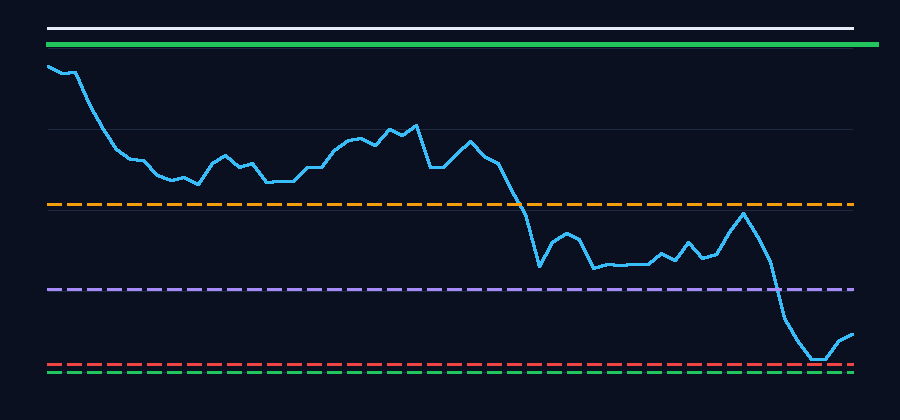

A public-data-only BTCUSDT paper trader that shows exactly why it waits, enters, or exits. The goal is to learn market structure, risk, and discipline before any live trading is considered.

Enter Long
Decision: Opened virtual long because signal confidence 0.6656 met threshold. Risk budget is 1.0% of equity with explicit stop_loss and take_profit.
Bot reasoning: Limit entry 0.1% above breakout: 80325 (resistance: 80361). Volume 3.05x (threshold: 0.75x), RSI: 35.3. Stop_loss: 45 (0.06%) below structure. Maker fee 0.01%.
Adaptation conclusion: Recent losing streak detected; reduce risk and require stronger confirmation.
Open paper position: long qty 0.08802418, entry 80324.61437, SL 80218.02, TP 80284.6855.
It calculates recent support and resistance from public 1m/5m candles.
Breakouts need volume confirmation. Current threshold: 1.8x recent average volume.
Every virtual entry must have stop loss, take profit, risk/reward, and fixed risk sizing.
Win rate, profit factor, and losing streaks change the progress mode, not emotions.
This is not a live trading system. It has no API keys, no account access, no signed requests, no order placement, no leverage, and no transfer functionality.
The website is rebuilt from the latest public candles and local paper state. Use it as a learning journal, not financial advice.
Suggested risk from adaptation model: 0.5% per virtual trade.